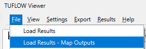
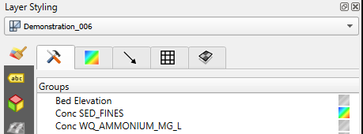

Appendix D — Demonstration model
D.1 Context
A demonstration model and small suite of simulations have been developed to support TUFLOW CATCH users. These simulations:
- Can be used as templates for construction of other TUFLOW CATCH simulations
- Encompass the supported TUFLOW CATCH configurations, and
- Are able to be run without a licence for TUFLOW CATCH, TUFLOW HPC or TUFLOW FV
Descriptions of the model and demonstration simulations follow.
Note: In addition to the demonstration model, a number of tutorial models are available for download and are documented in the TUFLOW Wiki.
D.2 Domain
The demonstration model is located in New Zealand. It uses publicly available base data sets where available (with some of these being modified on occasion), and synthetic data otherwise.
The catchment has:
- An area of approximately 55km\(^2\)
- A relief of approximately 20m
- Three (synthetic) land uses
- Urban
- Forest
- Agriculture
The general arrangement of the catchment is presented in Figure D.1.

The receiving waterway (which is a hypothetical lake) has:
- An area of approximately 1km\(^2\)
- A maximum depth of approximately 12m
- Two major riverine tributaries
- Two local wastewater treatment plant discharges
- One offtake
- An overflow outlet weir
The general arrangement of the receiving waterway is presented in Figure D.2.

The domain is simulated under TUFLOW CATCH for a period of 1 week from 01/01/2021 to 07/01/2021, inclusive.
D.3 Numerical models
The TUFLOW HPC, pollutant export and TUFLOW FV models are described following.
D.3.1 TUFLOW HPC
The TUFLOW HPC model has the following general configuration:
- A 2D cell size of 50m, SGS turned on with a sample target distance of 1m
- A synthetic rainfall record applied, with a maximum daily rainfall of approximately 60mm
- Three materials, with one for each land use above
- One soil layer with constant thickness of 0.6m
All simulations use GPU.
D.3.2 Pollutant export
The pollutant export model has various forms depending on the TUFLOW CATCH configuration is simulated. Across these various forms, both Shear1 and Washoff1 methods are deployed, and other pollutant export parameters are set using the guidance provided in this manual. In all cases where applicable:
- Salinity, dissolved oxygen, silicate, adsorbed phosphorus and phytoplankton are set to constant concentrations
- Sediment and particulate organics are prohibited from infiltrating to groundwater
- Water temperature is provided as a timeseries
- Sediment uses the Shear1 method, and all other pollutants use the Washoff1 method
D.3.3 TUFLOW FV
The TUFLOW FV model has the following general configuration:
- Simulation of hydrodynamics, including density (salinity and temperature) driven processes
- Full atmospheric heat exchange simulation
- Sediment transport simulation, with one sediment fraction
- Water quality simulation, using the Organics simulation class
- 3D simulation with 8 z layers and 6 sigma layers
- Three bed materials to define sediment transport and water quality processes
All simulations use GPU.
D.4 Simulation suite
The demonstration model suite includes the following simulations.
| Simulation name | Description | Use case | TUFLOW CATCH Configuration |
|---|---|---|---|
| Demonstration_001.tcc | Catchment hydraulic calibration: HPC 2d outlet | Calibration of catchment hydraulic model without receiving model | TUFLOW HPC calibration only |
| Demonstration_002.tcc | Catchment hydraulic calibration: Pollutant export configuration with constant salinity and temperature timeseries | Calibration of catchment hydraulic model with downstream polygon | Pollutant export |
| Demonstration_003.tcc | Catchment pollutant calibration: Pollutant export configuration with user pollutant/s | Only catchment hydraulic and pollutant export models are to be used, with non-TUFLOW FV pollutants and downstream polygon | Pollutant export |
| Demonstration_004.tcc | Catchment pollutant calibration: Pollutant export configuration with TUFLOW FV pollutants | Calibration of catchment pollutant export model following 002 calibration, to TUFLOW FV pollutants with downstream polygon | Pollutant export |
| Demonstration_005.tcc | Linked catchment and receiving model: Integrated configuration with all TUFLOW FV pollutants | Generation of first pass spatially resolved TUFLOW FV HD and pollutant boundaries for subsequent TUFLOW FV calibration initiation | Integrated |
| Demonstration_006.tcc | Receiving model calibration: TUFLOW FV simulation with preserved inflows | Catchment hydraulic and pollutant modelling complete (or largely so) and TUFLOW FV is to be calibrated without reunning catchment model | Integrated |
| Demonstration_007.tcc | Linked catchment and receiving model: Hydrology configuration with salinity and temperature | No pollutant simulation required in TUFLOW - extend 002 above to include TUFLOW FV model | Hydrology |
| Demonstration_008.tcc | Mass balance analysis: Pollutant export configuration with user pollutant/s | Use with post processing tools to demonstrate mass conservation | Pollutant export |
| Demonstration_009.tcc | Interventions: Pollutant export configuration with user pollutant/s | Demonstrate use of interventions. Can also apply post processing tools to assess mass conservation | Pollutant export |
D.5 Downloads
D.5.1 Binaries
The required binary executable files can be downloaded from the TUFLOW Downloads page
- TUFLOW CATCH
- TUFLOW HPC
- TUFLOW FV
It is suggested that these are saved in a convenient and centralised location. For the purposes of explanation in this Appendix, it has been assumed that they are saved to the following locations (with ReleaseXX/YY/ZZ being a placeholder for the release version of each, which will be different):
C:\TUFLOW\EXE\TUFLOWCATCH\ReleaseXX\TUFLOWCATCH.exeC:\TUFLOW\EXE\TUFLOW\ReleaseYY\TUFLOW_iSP_w64.exeC:\TUFLOW\EXE\TUFLOWFV\ReleaseZZ\TUFLOWFV.exe
D.5.2 Simulation files
The demonstration model suite can be downloaded here, in the TUFLOW CATCH section. For the purposes of explanation in this Appendix, it has been assumed that the suite is saved to the following location and then unzipped:
C:\TUFLOW\Demonstration\TUFLOWCATCH\
When unzipped, the high level folder structure will be as follows:
- Modelling
- TUFLOW
- TUFLOWCATCH
- TUFLOWFV
The key directory for executing TUFLOW CATCH is then
C:\TUFLOW\Demonstration\TUFLOWCATCH\Modelling\TUFLOWCATCH\runs
Once downloaded and unzipped, the user is required to:
- In the
Modelling\TUFLOWCATCH\runs\run_simulation.batfile:On line 2, copy and paste in the exact path to the TUFLOW CATCH executable over the placeholder
<TUFLOW CATCH EXECUTABLE FULL PATH>, so that:set exe=<TUFLOW CATCH EXECUTABLE FULL PATH>
becomes (using the example path above):
set exe=C:\TUFLOW\EXE\TUFLOWCATCH\ReleaseXX\TUFLOWCATCH.exe
Uncomment the desired simulation command by deleting the preceding ‘::’ , so that (if simulation 001 was to be run):
:: %exe% Demonstration_001.tcc
becomes:
%exe% Demonstration_001.tcc
- In the
Modelling\TUFLOWCATCH\runs\Demonstration_001.tccfile (and any otherDemonstration_00*.tccfile to be executed):In the CATCHMENT HYDRAULICS block, copy and paste in the exact path to the TUFLOW HPC executable over the placeholder
<TUFLOW EXECUTABLE FULL PATH>, so that:EXE == <TUFLOW EXECUTABLE FULL PATH>
becomes (using the example path above):
EXE == C:\TUFLOW\EXE\TUFLOW\ReleaseYY\TUFLOW_iSP_w64.exe
In the RECEIVING HYDRODYNAMICS AND WQ block, copy and paste in the exact path to the TUFLOW FV executable over the placeholder
<TUFLOW FV EXECUTABLE FULL PATH>, so that:EXE == <TUFLOW FV EXECUTABLE FULL PATH>
becomes (using the example path above):
EXE == C:\TUFLOW\EXE\TUFLOWFV\ReleaseZZ\TUFLOWFV.exe
Some text editors offer support for changing the above executable paths in multiple files at once, if required.
D.6 Execution
Once the binaries and simulation files have been downloaded and paths altered as above (and altered files saved), a TUFLOW CATCH simulation can be executed as follows:
Open a command prompt and navigate to the TUFLOW CATCH runs folder:
cd C:\TUFLOW\Demonstration\TUFLOWCATCH\Modelling\TUFLOWCATCH\runs C:Ensure the path to the TUFLOW CATCH executable has been set in run_simulations.bat, and that at least one simulation has been uncommented
Type the following in the command prompt and hit enter, and TUFLOW CATCH will execute:
run_simulations
Some notes on executing the demonstration simulations:
- Although not mandatory, it is suggested that the simulations be run one at a time, and in order, and results reviewed after each execution
Demonstration_005.tccmust be run prior toDemonstration_006.tccbecause the former generates boundary conditions for the latter.- To ensure that
Demonstration_006.tcccan access these boundaries generated byDemonstration_005.tcc, either:- Manually make a copy of
Demonstration_005_catchment_hydraulic.fvcatchbcand rename it asDemonstration_006_catchment_hydraulic.fvcatchbcin the same location, or - Uncomment the line beginning ‘copy…’ in the
run_simulations.batfile provided with the demonstration model (third line below)
- Manually make a copy of
REM Receiving model calibration: TUFLOW FV simulation with preserved inflows
REM Use case: Catchment hydraulic and pollutant modelling complete (or largely so) and TUFLOW FV is to be calibrated without rerunning catchment model
copy ..\bc_dbase\Demonstration_005_catchment_hydraulic.fvcatchbc ..\bc_dbase\Demonstration_006_catchment_hydraulic.fvcatchbc
%exe% Demonstration_006.tcc
D.7 Results interrogation
Once executed, results will be written to:
C:\TUFLOW\Demonstration\TUFLOWCATCH\Modelling\TUFLOWCATCH\results
Use the QGIS TUFLOW CATCH plugin (see Section 4.3) to generate a .json file and view the results. Simulations that involve only TUFLOW HPC or TUFLOW FV can have their *.xmdf and *.nc results interrogated in the normal manner through the TUFLOW Viewer as shown in Figure D.3.

D.7.1 Example json file creation
Simulations 005 and 006 can be used (after execution) to create a json file within the TUFLOW CATCH plugin (see Section 4.3). To do so, select the following results files in the json creation process (making sure the order in the selection dialogue box is as below):
- Demonstration_006_receiving_HD.nc
- Demonstration_006_receiving_WQ.nc
- Demonstration_005_catchment_hydraulic.xmdf
Save the json to here:
C:\TUFLOW\Demonstration\TUFLOWCATCH\Modelling\TUFLOWCATCH\results\Demonstration_006.tuflow.json
Once created, drag and drop the json onto a QGIS window to view the results. Hit F7 to toggle the layer styling panel and reveal the full suite of simulated quantities. As an example, select the ‘Conc SED_FINES’ field by clicking on the contour icon to the right of the field name as per Figure D.4.

An animation of the associated surface concentration results (that shows the connectivity between TUFLOW HPC, pollutant export and TUFLOW FV simulations of sediment) is presented in Figure D.5. This animation was prepared using the TUFLOW CATCH plugin, and the maximum concentration was set to 5 mg/L.
The connectivity between models is clear. Of note is the increase in concentrations once flows enter the receiving model arms. This is due to resuspension of previously accumulated bed sediment in the lake, which has been computed using the advanced TUFLOW FV Sediment Transport Module capability. Users could investigate this further by altering the erosion parameterisation within the TUFLOW FV sediment transport control file, or setting initial bed masses in the TUFLOW FV model to zero - this concentration spike will then not appear.
D.7.2 Example results
An example of a dry mass accumulation predicted by TUFLOW HPC (under the Washoff1 model) at a point in time just prior to rainfall is presented in Figure D.6, for FRP. The different accumulations of FRP in different land use areas are clear. The red areas are urban areas, which had the highest accumulation rates of FRP set within the simulation.

An example of a net mass distribution predicted by TUFLOW HPC (under the Shear1 model) at simulation end is presented in Figure D.7, for SED_FINES. Positive (negative) results reflect net accumulation (erosion) at simulation end. Erosion (and deposition) limits were set to 1 kg/ha in the simulation. The figure shows that (at least) the catchment areas within the stream network have been eroded to this maximum (blue colour), and no more.

D.8 Mass balance - Base Case
Mass balance is a key concept in environmental modelling, especially in the case of catchment pollutant export simulation. In this instance, mass balance requires that the mass of a given pollutant generated on ground from catchment processes equals that delivered downstream to receiving waters (less mass potentially resettled in-catchment). TUFLOW CATCH independently accounts for these two quantities and so comparison of the respective predictions allows for rigorous assessment of the overall model’s mass balance capability. This section presents that performance using Demonstration_008.tcc.
D.8.1 Concept
TUFLOW CATCH run in its Pollutant Export (or Integrated) configuration predicts the release of pollutant from catchment dry stores. This released pollutant is then advected downstream and potentially settled and resuspended en route. Some released pollutant also reaches the catchment outlet and as it exits the domain is tracked by TUFLOW CATCH as mass, concentrations and volumes. Reconciliation of these independent mass predictions (i.e. that released from - or reentering via settling - the catchment dry store and that leaving the domain) was undertaken by applying bespoke post processing tools to the predictions of Demonstration_008.tcc. The intention was to show that the cumulative released mass and the cumulative mass leaving the overall domain are equal.
D.8.2 Configuration
The TUFLOW CATCH simulation Demonstration_008.tcc was configured as follows:
- Based broadly on
Demonstration_003.tcc - MGL unit system
- Pollutant Export configuration
- Four pollutants
- Salinity (constant and zero)
- Temperature (as a timeseries)
- Tailings
- PFAS
- Settling activated for Tailings and PFAS, with PFAS settling velocity set to zero
- Two export methods
- Shear1 (applied to Tailings)
- Washoff1 (applied to PFAS)
- Infiltration set to off for both Tailings and PFAS
- Spatial distributions
- Tailings: uniform
- PFAS: specific land uses only
- A downstream receiving polygon specified
- Four pollutants
- Hydraulic configuration
- Model timestep set to 10 seconds
- Output timestep of map and timeseries set to 10 seconds
- 10 day simulation period
- Extended dry periods before and after a major rain event to allow for complete settling of pollutants from remaining surface waters
- Output
- Catchment: Cell centred netcdf format to avoid interpolation issues associated with some other formats
- Polygon timeseries of flow and concentration (see Section C.9.2)
- This simulation cannot be run in demo mode as it too long due to the time taken in writing the highly temporally resolved outputs. It must therefore be run with a licence
D.8.3 Method
Mass balance was computed separately for tailings and PFAS so as to demonstrate performance over different pollutant generation methods. A slightly different numerical recipe was applied to each:
- Tailings (Shear1 method)
- The net_mass_tailings field of the cell centred netcdf output file was interrogated and the released mass computed at each cell at each timestep. All cell-based released masses were summed for a given timestep to produce a timeseries of liberated mass across the entire domain. This calculation included the effects of erosion and settling for each cell by default
- The polygon outflow csv file was interrogated and mass leaving the domain computed at each timestep by computing the product of reported concentration and flow. This provided a timeseries of mass leaving the domain through the downstream polygon
- The mass of Tailings in water within the model was also computed at every timestep (by multiplying cell volume by Tailings concentration on a cell by cell basis and summing globally). This produced a further independent timeseries to compare with that computed as the difference of items 1 and 2 above
- PFAS (Washoff1 method)
- The dry_mass_PFAS field of the cell centred netcdf output file was interrogated and the total released mass computed by
- Computing the total mass of PFAS that was created across time and all cells via the accumulation process, noting that mass is not created at a timestep or cell where washoff is actively occurring
- Subtracting from this both:
- The final mass in the dry_mass_PFAS field and
- The final mass remaining in the model domain in the water phase (e.g. captured in local topographic features)
- The result was the mass removed from the domain via washoff
- As for Tailings, the polygon outflow csv file was interrogated and mass leaving the domain computed at each timestep by computing the product of reported concentration and flow. This provided a timeseries of mass leaving the domain through the downstream polygon
- The mass of PFAS in water within the model was also computed at every timestep (by multiplying cell volume by PFAS concentration on a cell by cell basis and summing globally). This was used to provide the final mass of PFAS remaining in the water phase of the domain at the end of the simulation, noting that settling is set to zero for PFAS
D.8.4 Results
In both Shear1 and Washoff1 cases, the key points of comparison are between:
- The final cumulative released and exiting masses. This is a single number to number comparison, and these need to be equivalent for mass conservation to hold. In the Shear1 case (i.e. tailings), a timeseries comparison between released and exiting mass is also possible
- The Shear1 method also allows for a timeseries comparison of water borne mass of pollutants, computed indirectly from mass balance and directly from post processing of concentration and volume cell outputs
The MATLAB scripts used to perform all post processing are provided in the Modelling\TUFLOWCATCH\matlab folder in the Demonstration Model download, and are self explanatory. Some functions from the TUFLOW FV MATLAB toolbox are required to execute these scripts.
D.8.4.1 Tailings
For Tailings simulation using the Shear1 export method:
- Exported tonnage: 451.92 (via the shear1 method)
- Received tonnage: 451.92 (entering the downstream polygon)
Timeseries of these are presented in Figure D.8. Note that the shape of the export and receiving curves are different (as expected). Specifically:
- The shift in time between exported and received masses reflects TUFLOW CATCH’s simulation of on-ground hydraulics and associated pollutant transport: time is taken (and explicitly simulated) between upstream pollutant export and subsequent delivery downstream
- The exported curve is non-monotonic and this reflects dynamic settling of previously released pollutant occurring in the catchment simulation
The final masses between exported and received are the same.
As noted above, a complementary measure of mass conservation performance is to compare the timeseries evolution of the total Tailings mass \(M\) in the water column at every timestep \(i\) computed via two independent means, particularly from the:
- Reported concentrations \(C\) and water volumes \(d\times\)cell area in each computational cell \(j\), summed across the domain at each timestep (“concentration method”):
\[ M_i = \text{cell area} \times \sum^{\text{num cells}}_{j=1} C_j \times depth_j \tag{D.1}\]
and
- Fluxes \(F\) of tailings mass to and from all wet cells at timestep \(i\) and adding this net flux to the mass at the previous timestep \(i-1\) (assuming an initial mass of zero, “flux method”)
\[ M_i = M_{i-1} + (F_i^{to} - F_i^{from}) \tag{D.2}\]
These two independent calculations of water column mass are presented as timeseries in Figure D.9. The timeseries coincide, confirming that:
- Mass is conserved
- The units of concentration (used to compute \(M_i\) via the concentration method) are correct. Similar analyses can be undertaken with other unit systems if desired.
D.8.4.2 PFAS
For PFAS simulation using the Washoff1 export method:
- Generated tonnage: 17.37 (total, via the washoff1 method)
- Received tonnage: 4.43 (entering the downstream polygon)
- Remaining dry store tonnage: 12.88 (remaining in the catchment as not washed off after all rainfall has ceased)
- Remaining water phase tonnage: 0.06 (remaining in the catchment in trapped water after all rainfall has ceased)
The sum of received and remaining (dry and wet) tonnage (4.43 + 12.88 + 0.06 tonnes) equals that generated (17.37 tonnes), as expected. Figure D.10 presents the time evolution of PFAS mass, for completeness, as:
- Water column mass as an instantaneous value (the “concentration method” above), and
- Exported cumulative mass exiting through the downstream polygon
D.9 Mass balance - Interventions
This section repeats the analysis of Section D.8, but includes the action of two interventions using Demonstration_009.tcc.
D.9.1 Concept
The concept is the same as that described in Section D.8.1, but includes consideration of the mass removed by interventions so that the pollutant mass generated, less that removed by settling and interventions, should equal that exiting the TUFLOW CATCH domain. This was undertaken by applying bespoke post processing tools (which are the same as those used above) to the predictions of Demonstration_009.tcc. The intention was to show that the cumulative released mass and the cumulative mass leaving the overall domain are different by an amount equal to that removed by the interventions. This demonstrates mass balance.
D.9.2 Configuration
The TUFLOW CATCH simulation Demonstration_009.tcc was configured to be the same as Demonstration_008.tcc but with the following modifications:
- Pollutant Export configuration
- Two intervention devices
- Wetland
- Riparian revegetation strip
- Two removal methods
- Lookup table (PFAS)
- Constant (Tailings)
- Two intervention devices
- This simulation cannot be run in demo mode as it too long due to the time taken in writing the highly temporally resolved outputs. It must therefore be run with a licence
D.9.3 Method
Mass balance was computed separately for tailings and PFAS so as to demonstrate performance over different pollutant generation methods. A slightly different numerical recipe was applied to each, as described above in Section D.8.3. The only difference in this case was the inclusion of mass removal due to the two interventions.
D.9.4 Results
In both Shear1 and Washoff1 cases, the key points of comparison are between:
- The final cumulative released, removed and exiting masses. This is a single number to number comparison, with (cumulative released - cumulative removed) required to be equal to cumulative exiting mass. In the Shear1 case (i.e. Tailings), a timeseries comparison between released and exiting mass is also possible
- The Shear1 method also allows for a timeseries comparison of water borne mass of pollutants, computed indirectly from mass balance and directly from post processing of concentration and volume cell outputs
The MATLAB scripts used to perform all post processing are provided in the Modelling\TUFLOWCATCH\matlab folder in the Demonstration Model download, and are self explanatory. Some functions from the TUFLOW FV MATLAB toolbox are required to execute these scripts.
D.9.4.1 Tailings
For Tailings simulation using the Shear1 export method:
- Exported tonnage: 477.98 (via the shear1 method)
- Removed tonnage: 105.49 (via interventions)
- Received tonnage: 372.49 (entering the downstream polygon)
Timeseries of these are presented in Figure D.11. Note that the shape and end points of the export and receiving curves are different (as expected). Specifically:
- The shift in time between exported and received masses reflects TUFLOW CATCH’s simulation of on-ground hydraulics and associated pollutant transport: time is taken (and explicitly simulated) between upstream pollutant export and subsequent delivery downstream
- The exported curve is non-monotonic and this reflects dynamic settling of previously released pollutant occurring in the catchment simulation
- The endpoints differ by exactly the amount removed due to interventions, as expected: the removed mass does not exit the model through the downstream polygon. The final masses between (exported - removed) and (received) are the same.
An interesting feature of the above analysis is that TUFLOW CATCH predicts a greater tonnage of Tailings is exported (not received downstream) from the overall catchment when interventions are put in place (477.98 tonnes with intervention compared to 451.92 tonnes without interventions). This is because the Tailing mass that is being removed is not able to settle and be resuspended downstream. Rather, fresh material - that would otherwise not have been released - is being liberated from regions downstream of interventions instead of settled material being (effectively) recycled.
As above, a complementary measure of mass conservation performance is to compare the timeseries evolution of the total Tailings mass \(M\) in the water column at every timestep \(i\) computed reported concentrations (see Equation D.1) and mass flux analysis (see Equation D.2). These two independent calculations of water column mass are presented as timeseries in Figure D.12. As expected, the timeseries differ throughout and at their end point in this case where interventions are included, confirming that:
- Mass is progressively removed
- The final difference in the two masses is the same as the mass removed by the intervention measures
The difference between these two mass timeseries provides the corresponding cumulative timeseries of mass removal, which has also been included in the figure. As expected, the final value of the cumulative removed mass equals the difference between the two mass computation methods, most obviously at simulation end.
D.9.4.2 PFAS
For PFAS simulation using the Washoff1 export method, with interventions:
- Generated tonnage: 17.37 (total, via the washoff1 method)
- Removed tonnage: 0.96 (total removed by interventions)
- Received tonnage: 3.49 (entering the downstream polygon)
- Remaining dry store tonnage: 12.88 (remaining in the catchment as not washed off after all rainfall has ceased)
- Remaining water phase tonnage: 0.04 (remaining in the catchment in trapped water after all rainfall has ceased)
The sum of received and remaining tonnage (3.49 + 12.88 + 0.04 tonnes) equals that generated less removed by interventions (17.37 - 0.96 tonnes), as expected.
D.10 Mass balance - Groundwater
The reporting of both water volume and pollutant mass fluxes into groundwater layers from above allows for subsurface mass balance analysis to be undertaken.
D.10.1 Concept
The concept is to compare the time evolution of total water volume and pollutant mass in a TUFLOW CATCH groundwater layer via two independent methods that use:
- An initial layer volume / mass and flux output timeseries
- Porosity and groundwater level and concentration output timeseries
These are described following.
D.10.1.1 Flux calculations
D.10.1.1.1 Volume
The volume of water \(V^{F,inst}_t\) at time \(t\) in a given groundwater layer can be computed by summing the previous volume \(V^{F,inst}_{t-1}\) and the reported instantaneous volumetric fluxes \(F\) via Equation D.3:
\[ V^{F,inst}_t = V^{F,inst}_{t-1} + (F^{V,inst}_{t,in} - F^{V,inst}_{t,out}) \times \Delta t \tag{D.3}\]
where
- \(F^{V,inst}_{t,in}\) is the instantaneous volumetric flux reported by TUFLOW CATCH for the considered layer
- \(F^{V,inst}_{t,out}\) is the instantaneous volumetric flux reported by TUFLOW CATCH for the layer below the considered layer (the flux entering the layer below is the same as the flux exiting the layer considered)
- \(\Delta t\) is the output timestep
- \(V^{F,inst}_{t-1}\) is the previous computed volume and is the initial volume when \(t\) equals one
A similar computation for \(V^{F,tint}_t\) applies if time integrated fluxes are used:
\[ V^{F,tint}_t = V^{F,tint}_{t-1} + (F^{V,tint}_{t,in} - F^{V,tint}_{t,out}) \tag{D.4}\]
where
- \(F^{V,tint}_{t,in}\) is the time integrated volumetric flux reported by TUFLOW CATCH for the considered layer
- \(F^{V,tint}_{t,out}\) is the time integrated volumetric flux reported by TUFLOW CATCH for the layer below the considered layer (the flux entering the layer below is the same as the flux exiting the layer considered)
D.10.1.1.2 Mass
The mass of pollutant \(M^{F,inst}_t\) at time \(t\) in a given groundwater layer can be computed by summing the previously computed mass \(M^{F,inst}_{t-1}\) and the reported instantaneous mass fluxes \(F\) via Equation D.5:
\[ M^{F,inst}_t = M^{F,inst}_{t-1} + (F^{M,inst}_{t,in} - F^{M,inst}_{t,out}) \times \Delta t \tag{D.5}\]
where
- \(F^{M,inst}_{t,in}\) is the instantaneous mass flux reported by TUFLOW CATCH for the considered layer
- \(F^{M,inst}_{t,out}\) is the instantaneous mass flux reported by TUFLOW CATCH for the layer below the considered layer (the flux entering the layer below is the same as the flux exiting the layer considered)
- \(\Delta t\) is the output timestep
- \(M^{F,inst}_{t-1}\) is the previously computed mass and is the initial mass when \(t\) equals one
A similar computation applies if time integrated fluxes are used:
\[ M^{F,tint}_t = M^{F,tint}_{t-1} + (F^{M,tint}_{t,in} - F^{M,tint}_{t,out}) \tag{D.6}\]
where
- \(F^{M,tint}_{t,in}\) is the time integrated mass flux reported by TUFLOW CATCH for the considered layer
- \(F^{M,tint}_{t,out}\) is the time integrated mass flux reported by TUFLOW CATCH for the layer below the considered layer (the flux entering the layer below is the same as the flux exiting the layer considered)
D.10.1.2 Porosity calculations
D.10.1.2.1 Volume
The volume of water \(V^{P}_t\) at time \(t\) in a given groundwater layer can be computed by multiplying the reported groundwater depth, cell area and porosity in each cell and summing across the domain via Equation D.7:
\[ V^{P}_t = \Delta x^2 \times \sum_{i=1}^{n_{cells}} (GWd)^i_t \times \phi^i \tag{D.7}\]
where
- \(\Delta x\) is the model cell size
- \((GWd)^i_t\) is the reported groundwater depth in cell \(i\) at time \(t\)
- \(\phi^i\) is the soil porosity in cell \(i\)
D.10.1.2.2 Mass
The mass of pollutant \(M^{P}_t\) at time \(t\) in a given groundwater layer can be computed by multiplying the reported groundwater depth, cell area, pollutant concentration and porosity in each cell and summing across the domain via Equation D.8:
\[ M^{P}_t = \Delta x^2 \times \sum_{i=1}^{n_{cells}} (GWd)^i_t \times C_t^i \times \phi^i \tag{D.8}\]
where
- \(C_t^i\) is the pollutant concentration in cell \(i\) at time \(t\)
D.10.2 Configuration
A TUFLOW CATCH model with 6 groundwater layers was used to undertake the analysis above. It included two sediment fractions. A description of the model is presented in this webinar: Whole of system simulation of catchment water quality treatment devices.
D.10.3 Method
Mass balance was assessed for water volume and one sediment fraction and all six layers. Only one layer’s results are presented here for clarity. Mass balance performance is presented in scatter plots that compare:
- \(V^{F,inst}\) to \(V^{P}\)
- \(V^{F,tint}\) to \(V^{P}\)
- \(M^{F,inst}\) to \(M^{P}\)
- \(M^{F,tint}\) to \(M^{P}\)
Mass balance requires that these scatter plots have all points lying on the 1:1 line, i.e. that computation of flux and porosity based quantities at a given timestep are equal.
D.10.4 Results
D.10.4.1 Volume
The comparison between \(V^{F,inst}\) and \(V^{P}\) is presented in Figure D.13. The correspondence between the two computed quantities is 1:1.
The comparison between \(V^{F,tint}\) and \(V^{P}\) is presented in Figure D.14. The correspondence between the two computed quantities is 1:1.
D.10.4.2 Mass
The comparison between \(M^{F,inst}\) and \(M^{P}\) is presented in Figure D.15. The correspondence between the two computed quantities is 1:1.
The comparison between \(M^{F,tint}\) and \(M^{P}\) is presented in Figure D.16. The correspondence between the two computed quantities is 1:1.